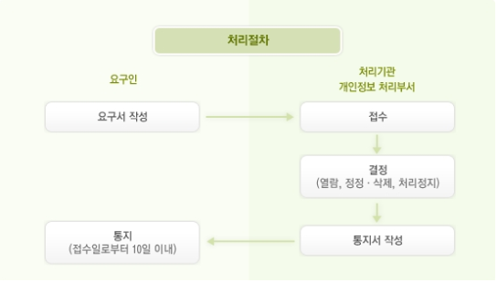

- 양천구에서 취급하는 모든 개인정보는 관련법령에 근거하거나 정보주체의 동의에 의하여 수집·보유 및 처리되고 있습니다.
양천구가 취급하는 모든 개인정보는 개인정보보호법 등 관련 법령상의 개인정보보호 규정을 준수하여 이용자의 개인정보 보호 및 권익을
보호하고 개인정보와 관련한 이용자의 고충을 원활하게 처리할 수 있도록 다음과 같은 처리방침을 두고 있습니다.
개인정보의 처리목적
- 양천구는 개인정보를 다음의 목적이외의 용도로는 이용하지 않으며 이용 목적이 변경될 경우에는 동의를 받아 처리하겠습니다.
- 홈페이지 회원 가입 및 관리
홈페이지 서비스 이용 및 회원관리,도서관 서비스 이용, 구정 홍보(행사, 소식 등) 안내, 불량회원의 부정 이용 방지, 비인가 사용방지, 민원 신청 및 처리, 고지사항 전달, 게시물 등록, 자료 다운로드, 시설물 예약 및 교육강좌 신청결과의 안내, 전자민원, 본인 의사 확인, 원활한 의사소통 경로의 확보, 정기간행물 발송, 공공행사 및 공공서비스 이용 안내, 설문 등의 목적으로 양천구 패밀리 사이트에서 공동 이용, 만 14세 미만 아동의 개인정보 처리시 법정대리인의 동의여부 확인 등을 목적으로 개인정보를 처리합니다.
- 민원사무 처리
민원인의 신원 확인, 민원사항 확인, 사실조사를 위한 연락·통지, 처리결과 통보 등의 목적으로 개인정보를 처리합니다.
- 개인영상정보
범죄의 예방 및 수사, 시설안전 및 화재예방, 교통단속, 교통정보의 수집·분석 및 제공 등을 목적으로 개인정보를 처리합니다.
-
개인정보처리시스템
- 새올행정시스템 : 지역산업, 민방위, 보건행정 등 각종 행정 업무를 목적으로 개인정보를 처리합니다.
- 부동산종합공부시스템 : 토지대장 및 지적도 업무 등을 목적으로 개인정보를 처리합니다.
- 부동산거래관리시스템 : 부동산실거래신고 및 검인신고 등 부동산거래관련 업무 목적으로 개인정보를 처리합니다.
- 불법주정차 단속 문자 알리미 : 불법주정차 단속 문자 알림을 목적으로 개인정보를 처리합니다.
개인정보의 처리 및 보유기간, 처리하는 개인정보의 항목
- 양천구는 법령에 근거하거나 정보주체로부터 동의받은 범위내에서 개인정보를 처리 및 보유합니다.
- 개인정보 처리 및 보유현황 확인 : 개인정보보호 종합지원포털(http://www.privacy.go.kr) > 개인정보민원 > 개인정보의 열람 등 요구 > 개인정보파일 목록 검색 > 기관명에 “양천구” 입력 후 조회
자동으로 수집‧저장되는 정보 및 거부에 관한 사항
- 또한, 양천구청 홈페이지 서비스 이용과정에서 아래 개인정보 항목이 자동으로 생성되어 수집‧저장됩니다.
- 위와 같이 자동 수집·저장되는 정보는 이용자 여러분에게 보다 나은 서비스를 제공하기 위해 홈페이지의 개선과 보완을 위한 통계분석, 이용자와 웹사이트간의 원활한 의사소통 등을 위해 이용되어질 것입니다.
- 다만 쿠키는 이용자에게 보다 빠르고 편리한 웹사이트 사용을 지원하고 맞춤형 서비스를 제공하기 위해 사용되지만, 이용자는 이를 거부할 수 있습니다.
접속 로그, 쿠키, 접속 IP 정보, 방문일시, 이용자의 브라우져 종류 및 OS
- 1. 쿠키란 무엇일까요?
쿠키란 웹사이트를 운영하는데 이용되는 서버가 이용자의 브라우저에 보내는 아주 작은 텍스트 파일로서 이용자의 컴퓨터에 저장됩니다. - 2. 쿠키를 왜 사용하나요?
쿠키를 통해 이용자가 선호하는 설정 등을 저장하여 이용자에게 보다 빠른 웹 환경을 지원하며, 편리한 이용을 위해 서비스 개선에 활용합니다. 이를 통해 이용자는 보다 손쉽게 서비스를 이용할 수 있게 됩니다. - 3. 쿠키를 수집하지 못하게 거부하고 싶다면?
이용자는 쿠키 설치에 대한 선택권을 가지고 있습니다. 따라서, 이용자는 웹 브라우저에서 옵션을 설정함으로써 모든 쿠키를 허용하거나, 쿠키가 저장될 때마다 확인을 거치거나, 모든 쿠키의 저장을 거부할 수도 있습니다. 다만 쿠키 설치를 거부할 경우 웹 사용이 불편해지며 로그인이 필요한 일부 서비스 이용에 어려움이 있을 수 있습니다.
설정 방법의 예
1) Internet Explorer의 경우 :
웹 브라우저 상단의 도구 메뉴 > 인터넷 옵션 > 개인정보 > 설정 > 고급 > 쿠키 > 현재 사이트의 쿠키 “차단”
2) Chrome의 경우 :
크롬 웹 브라우저 우측 상단 “설정” > 하단 “고급” > 개인정보 보호 및 보안에서 콘텐츠 설정 > 쿠키 > 우측의 더보기 설정을 클릭설정 메뉴 > 화면 하단의 고급 설정 표시 > 개인정보의 콘텐츠 설정 버튼 > 쿠키 > 사이트에서 쿠키 데이터 저장 및 읽기 허용을 사용 또는 사용 중지
개인정보의 제3자 제공에 관한 사항
- 양천구는 정보주체의 개인정보를 수집·이용 목적으로 명시한 범위 내에서 처리하며, 다음의 경우를 제외하고는 정보주체의 사전 동의 없이는 본래의 목적 범위를 초과하여 처리하거나 제3자에게 제공하지 않습니다.
- 정보주체로부터 별도의 동의를 받는 경우
- 법률에 특별한 규정이 있는 경우
- 정보주체 또는 법정대리인이 의사표시를 할 수 없는 상태에 있거나 주소불명 등으로 사전 동의를 받을 수 없는 경우로서 명백히 정보주체 또는 제3자의 급박한 생명, 신체, 재산의 이익을 위하여 필요하다고 인정되는 경우
- 개인정보를 목적 외의 용도로 이용하거나 이를 제3자에게 제공하지 아니하면 다른 법률에서 정하는 소관 업무를 수행할 수 없는 경우로서 보호위원회의 심의·의결을 거친 경우
- 조약, 그 밖의 국제협정의 이행을 위하여 외국정보 또는 국제기구에 제공하기 위하여 필요한 경우
- 범죄의 수사와 공소의 제기 및 유지를 위하여 필요한 경우
- 법원의 재판업무 수행을 위하여 필요한 경우
- 형 및 감호, 보호처분의 집행을 위하여 필요한 경우
개인정보처리의 위탁에 관한 사항
- 양천구는 이용자의 동의없이 해당 개인정보의 처리를 타인에게 위탁하지 않습니다. 다만, 양천구가 제3자에게 개인정보의 처리업무를 위탁하는 경우에는 「개인정보보호법」 제26조(업무위탁에 따른 개인정보의 처리 제한)에 따라 위탁하며 다음 각 호의 내용이 포함 된 문서에 의하며 위탁 업무의 내용과 수탁자를 양천구 홈페이지에 게시합니다.
- 위탁업무 수행 목적 외 개인정보의 처리 금지에 관한 사항
- 개인정보의 기술적·관리적 보호조치에 관한 사항
- 그 밖에 개인정보의 안전한 관리를 위하여 다음과 같이 대통령령으로 정한 사항
- 위탁업무의 목적 및 범위
- 재위탁 제한에 관한 사항
- 개인정보에 대한 접근 제한 등 안전성 확보 조치에 관한 사항
- 위탁업무와 관련하여 보유하고 있는 개인정보의 관리 현황 점검 등 감독에 관한 사항
- 법 제26조제2항에 따른 수탁자가 준수하여야 할 의무를 위반한 경우의 손해배상 등 책임에 관한 사항
정보주체의 권리·의무 및 행사 방법
- 정보주체는 다음과 같은 권리를 행사 할 수 있으며, 만14세 미만 아동의 법정대리인은 그 아동의 개인정보에 대한 열람, 정정·삭제, 처리정지를 요구할 수 있습니다.
- 개인정보 열람 요구
양천구에서 보유하고 있는 개인정보파일은 「개인정보보호법」 제35조(개인정보의 열람)에 따라 열람을 요구할 수 있습니다. 다만 개인정보 열람 요구는 「개인정보보호법」 제35조제5항에 의하여 다음과 같이 제한될 수 있습니다.
- 법률에 따라 열람이 금지되거나 제한되는 경우
- 다른 사람의 생명·신체를 해할 우려가 있거나 다른 사람의 재산과 그 밖의 이익을 부당하게 침해 할 우려가 있는 경우
- 공공기관이 다음 각 목의 어느 하나에 해당하는 업무를 수행할 때 중대한 지장을 초래하는 경우
- 조세의 부과·징수 또는 환급에 관한 업무
- 「초·중등교육법」 및 「고등교육법」에 따른 각급 학교, 「평생교육법」에 따른 평생교육시설, 그 밖의 다른 법률에 따라 설치 된 고등교육기관에 서의 성적 평가 또는 입학자 선발에 관한 업무
- 학력·기능 및 채용에 관한 시험, 자격 심사에 관한 업무
- 보상금·급부금 산정 등에 대하여 진행 중인 평가 또는 판단에 관한 업무
- 다른 법률에 따라 진행 중인 감사 및 조사에 관한 업무
- 개인정보 열람 요구
- 개인정보 정정·삭제 요구
양천구에서 보유하고 있는 개인정보파일에 대해서는 「개인정보보호법」 제36조(개인정보의 정정•삭제)에 따라 양천구에 개인정보의 정정·삭제를 요구할 수 있습니다. 다만, 다른 법령에서 그 개인정보가 수집 대상으로 명시되어 있는 경우에는 그 삭제를 요구할 수 없습니다.
- 개인정보 처리정지 요구
양천구에서 보유하고 있는 개인정보파일에 대해서는 「개인정보보호법」 제37조(개인정보의 처리정지 등)에 따라 양천구에 개인정보의 처리정지를 요구할 수 있습니다. 다만, 개인정보 처리정지 요구시 「개인정보보호법」 제37조제2항에 의하여 처리정지 요구가 거절될 수 있습니다.
- 법률에 특별한 규정이 있거나 법령상 의무를 준수하기 위하여 불가피한 경우
- 다른 사람의 생명·신체를 해할 우려가 있거나 다른 사람의 재산과 그 밖의 이익을 부당하게 침해할 우려가 있는 경우
- 공공기관이 개인정보를 처리하지 아니하면 다른 법률에서 정하는 소관 업무를 수행할 수 없는 경우
- 개인정보를 처리하지 아니하면 정보주체와 약정한 서비스를 제공하지 못하는 등 계약의 이행이 곤란한 경우로서 정보주체가 그 계약의 해지 의사를 명확하게 밝히지 아니한 경우
- 개인정보 열람, 정정·삭제, 처리정지 처리절차

- [별지1]개인정보 열람정정삭제등 요구서 다운로드
정보주체의 조치 불복 시 이의제기 안내
- 양천구 홈페이지 내 개인정보 처리방침에 정보주체의 개인정보 열람, 정정, 삭제, 처리정지, 수집출처 요구에 대한 개인정보처리자의 조치에 불복이 있는 경우 이의제기를 할 수 있습니다.
- 1. 불복사유
- 정보공개 청구에 대한 양천구청의 열람거절
- 정보공개 청구에 대한 양천구청의 일부열람
- 정보공개 청구일로부터 20일 이내에 양천구청이 공개 여부를 통지하지 않은 경우
- 2. 처리절차
- 이의신청 : 양천구청으로부터 열람여부의 결정통지를 받은 날 또는 열람거절의 결정이 있는 것으로 보는 날부터 "30일"이내 제기
- 행정심판 : 처분이 있음을 안 날부터 "90일" 이내 제기(처분이 있은 날로부터 180일을 경과하면 제기 불가)
- 행정소송 : 처분 등이 있음을 안 날부터 "90일" 이내(처분 등이 있는 날로부터 1년을 경과하면 제기 불가)
개인정보의 파기 절차 및 방법
- 이용자의 개인정보는 개인정보수집 및 이용 목적이 만료되면 지체없이 파기합니다. 다만, 홈페이지 회원정보를 제외하고 민원서류발급이력 등은 “공공기록물 관리에 관한법률”에 따라 파기절차를 거칩니다.
- 파기절차
목적이 달성된 개인정보는 기록물 파기심의를 거치는 동안 별도의 DB로 옮겨져(종이의 경우에는 별도의 서류함에 보관) 일정기간 저장된 후 파기됩니다.
- 파기 방법
- 종이에 출력된 개인정보는 분쇄기로 분쇄하거나 소각을 통하여 파기합니다.
- 전자적 파일형태로 저장된 개인정보는 기록을 재생할 수 없는 기술적 방법을 사용하여 삭제합니다.
개인정보의 안전성 확보 조치
- 양천구는 「개인정보보호법」 제29조에 따라 다음과 같이 안전성 확보에 필요한 기술적, 관리적, 물리적 조치를 하고 있습니다.
- 개인정보의 암호화
이용자의 개인정보는 비밀번호는 암호화 되어 저장 및 관리되고 있어, 본인만이 알 수 있으며 중요한 데이터는 파일 및 전송 데이터를 암호화 하거나 파일 잠금 기능을 사용하는 등의 별도 보안기능을 사용하고 있습니다.
- 해킹 등에 대비한 기술적 대책
해킹이나 컴퓨터 바이러스 등에 의한 개인정보 유출 및 훼손을 막기 위하여 보안프로그램을 설치하고 주기적인 갱신·점검을 하며 외부로부터 접근이 통제된 구역에 시스템을 설치하고 기술적/물리적으로 감시 및 차단하고 있습니다.
- 개인정보처리시스템 접근 제한
개인정보를 처리하는 데이터베이스시스템에 대한 접근권한의 부여, 변경, 말소를 통하여 개인정보에 대한 접근통제를 위하여 필요한 조치를 하고 있으며 침입차단시스템과 침입방지시스템을 이용하여 외부로부터의 무단 접근을 통제하고 있습니다.
- 개인정보 취급 직원의 최소화 및 교육
개인정보를 취급하는 직원을 지정하고 담당자에 한정시켜 최소화 하여 개인정보를 관리하는 대책을 시행하고 있습니다.
- 비인가자에 대한 출입 통제
개인정보를 보관하고 있는 개인정보시스템의 물리적 보관 장소를 별도로 두고 이에 대해 출입통제 절차를 수립, 운영하고 있습니다.
권익침해 구제 방법
- 개인정보에 관한 권리 또는 이익을 침해받은 사람은 개인정보침해 신고센터 등으로 침해사실을 신고할 수 있습니다.
개인정보침해신고센터 : ☎118
개인정보 분쟁조정위원회 : ☎1833-6972
대검찰청 사이버수사과 : ☎1301 (www.spo.go.kr)
경찰청 사이버안전국 : ☎182 (http://cyberbureau.police.go.kr)
- 또한, 개인정보의 열람, 정정·삭제, 처리정지 등에 대한 정보주체자의 요구에 대하여 공공기관의 장이 행한 처분 또는 부작위로 인하여 권리 또는 이익을 침해 받은 자는 행정심판법이 정하는 바에 따라 행정심판을 청구할 수 있습니다.
중앙행정심판위원회(http://center.simpan.go.kr)의 전화번호 안내 참조
개인정보보호 책임자 및 담당자 연락처
- 양천구 개인정보보호책임자
- 직책 : 기획재정국장
- 성명 : 하재호
- 개인정보보호 담당자
- 부서명 : 스마트정보과
- 담당자 : 노경진
- 연락처 : 02-2620-3253 , 팩스 : 02-2620-4447
- 분야별 보호책임자 : 개인정보 처리부서의 장